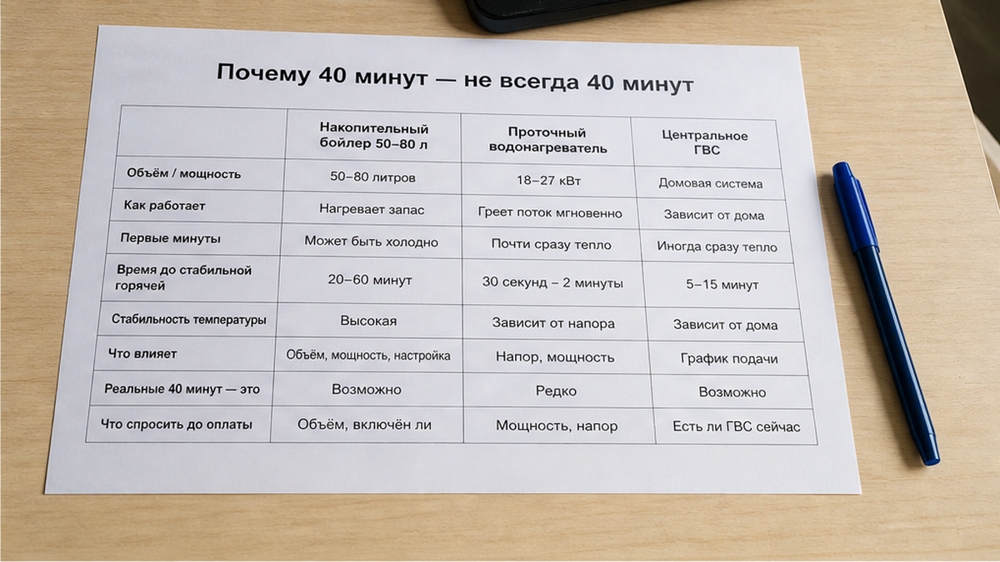
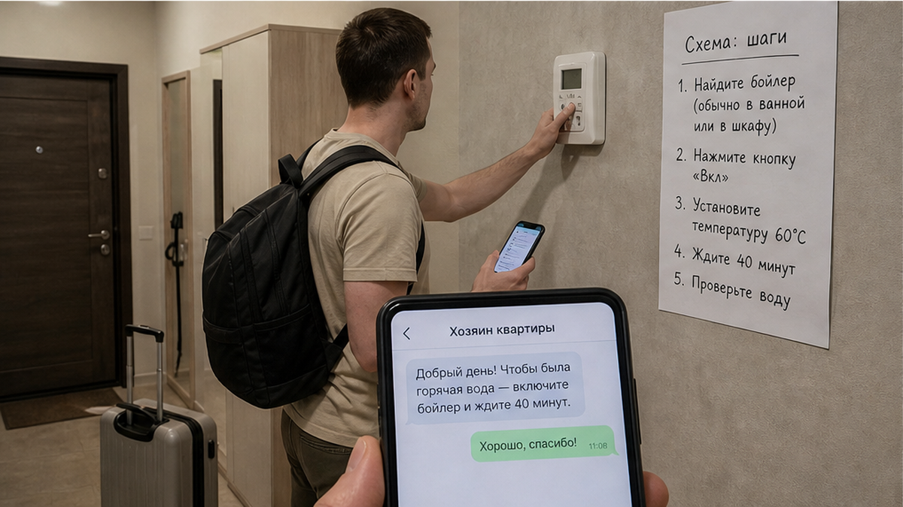
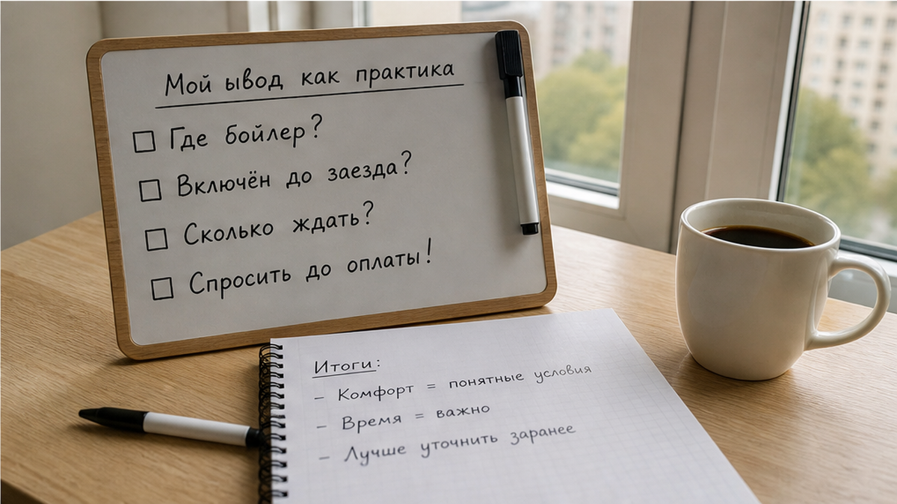

«Горячая вода есть». Именно так было написано в объявлении посуточной квартиры в Тюмени. Рядом — обещание «всё для душа», фотографии ванной и уверенный вид предложения, за которое гость заранее переводит 7 800–9 600 ₽ за 2–3 ночи. Заезд поздний: человек добирается после дороги, открывает дверь, рассчитывает быстро принять душ и лечь спать. Но из крана идёт ледяная струя. В чате хозяин отвечает: «включите бойлер, подождите 40 минут».
Я хост посуточной в Тюмени. Это «Добрый дом». И я знаю, как такая формулировка выглядит со стороны гостя: вода вроде бы заявлена, но пользоваться ею прямо сейчас нельзя. Слово «есть» превращается в объяснение, почему гость должен сам искать бойлер, включать его после позднего заезда и ждать неизвестно сколько. По таким ситуациям мы общаемся через Telegram и MAX: вопрос о горячей воде лучше задать до оплаты, а не после того, как чемодан уже стоит в прихожей.

Если в квартире стоит накопительный бойлер на 50–80 литров и он полностью остыл, сорока минут может не хватить. В зависимости от мощности и температуры вода может нагреваться 1–2 часа. Поэтому фраза «подождите 40 минут» не является универсальным сроком готовности душа. Она может означать только то, что нагрев запустили, а не то, что через 40 минут всем хватит горячей воды.
Есть и другие варианты. В квартире может быть проточный нагреватель, которому важны электрическая мощность и стабильность работы. В Тюмени в отдельных домах используется центральное горячее водоснабжение, а летом и в сентябре возможны ограничения, связанные с сезонными работами. Но для гостя различие между бойлером, проточным нагревателем и центральной системой не должно выясняться в ледяном душе. Это обязанность объявления и хозяина — заранее честно описать условия.
Именно здесь появляется подмена: хозяйская задача по подготовке квартиры переносится на гостя. Гость поздно приехал, сам ищет оборудование, сам включает, сам засчитывает время ожидания и сам решает, можно ли уже пользоваться водой. Формально «горячая вода есть», а по факту услуга доступна позже и только после дополнительных действий.

Слово «есть» часто работает как короткая рекламная заглушка. «Всё для душа» может означать не комплект для нормального пользования, а один мокрый коврик. «Кухня есть» — кухню, на которой гость не готовит ни разу. «Тишина в чате» после предоплаты — отсутствие ответа, когда он особенно нужен. Я разбирал похожие ситуации в материалах про всё для гостей в ванной, про кухню, которая есть только в описании и про предоплату и тишину в чате.
Рейтинг тоже не всегда отвечает на конкретный вопрос. Оценка 4,8 может выглядеть убедительно, но два отзыва способны повторять одно и то же: «всё супер», без слов о температуре воды, времени нагрева и позднем заселении. Поэтому полезно смотреть не только на цифру, но и на детали отзывов. Об этом — в разборе рейтинга 4,8 и одинаковых отзывов.
Судя по поисковым запросам, история совсем не редкая: «квартиры посуточно тюмень» ищут около 5 134 раза в месяц, а «в квартире нет горячей воды» — 2 589. Второй запрос люди набирают, стоя в ванной. Это и есть цена трёх слов в объявлении.

Перед оплатой я бы задал один прямой вопрос: «Где бойлер, был ли включён до заезда, сколько ждать?» Если на него отвечают уклончиво, это уже сигнал. Нужно уточнить, какая система нагрева стоит, будет ли горячая вода к моменту заселения, кто включает оборудование и что происходит, если вода не нагрелась.
«Нет. Так не заселяем.» Если к моменту заезда нельзя подтвердить готовность базовой услуги, обещание в объявлении не должно заменять проверку. Сначала проверка. Потом перевод. Это простое правило снижает риск заплатить за квартиру, где первый вечер начинается не с отдыха, а с поиска автомата и ожидания у ванной.
Если вы уже столкнулись с ледяным душем, не уходите молча и не ограничивайтесь спором в чате. Зафиксируйте ситуацию и задайте три вопроса: когда вода будет горячей, кто и что сделает для исправления, какой вариант предложат, если ждать нельзя. До выезда можно обсуждать частичный возврат или переселение. После выезда доказать обстоятельства и договориться обычно сложнее.
Если нужно уточнить условия конкретной квартиры или задать вопрос до бронирования, напишите в Telegram или MAX. Забронировать можно через форму бронирования, подробности есть на сайте, телефон: +7 (993) 574-83-22. Менеджер: Telegram менеджера.